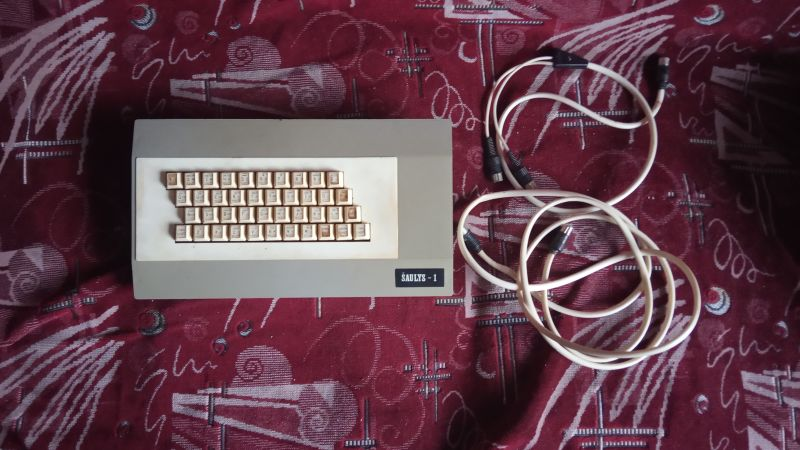

| Годы производства | Неизвестно, вероятно с 1990? |
| Производился | Неизвестно |
| Процессор | 80A-CPU MME( аналог Z80 производства ГДР ) |
| Частота | 4 МГц |
| Скорость | 105% |
| ОЗУ | 48КБ |
| ПЗУ | 16КБ |
| Преемущества | Встроенный динамик. |
| Недостатки | Нестандартные порты для подключения периферии. |
Šaulys - 1 (бежевый)
Šaulys - 1 в переводе с литовского "Стрелец" - отечественный/литовский клон ZX Spectrum произведенный неизвестным предприятием в городе Шауляй Литовской ССР. В нашем музее имеется экземпляр с номером 498 и выпущен он был в июле 1991 года.Госцена значится как 1480 рублей, учитывая что клон сделан в июле 1991 года, а зарплаты в Литве на 1990-ый год были в районе 360-450 рублей, т.к. условия и цены были лучше чем в РСФСР, то получается что компьютер стоил достаточно дорого, если посчитать то в среднем пришлось бы копить 5-6 месяцев для его покупки среднему жителю Литвы. А вспоминая что он выпущен в 1991 году, тем более такая цена довольно большая - за 980 рублей можно было купить телевизор Рубин, а за 2 тысячи - видеомагнитофон "Электроника ВМ-12".
Клон "Дубна" в РСФСР в 1988 году стоил 455 рублей при зарплате в среднем в 200-300 рублей. И это даже дешевле и копить нужно было бы меньше за один по сути и тот же компьютер, что является интересным фактом.
Комплектация этого компьютера очень скромная:
Сам клонКабель для чтения\записи
Кабель DIN-5 для подключения (вероятно)
Основная информация:
Данный клон в наших краях является одним из самых пожалуй редких компьютеров ZX Spectrum-типа поскольку самая минимальная информация в русскоязычном и прибалтийском сегментах интернета отсутствует.Точно можно сказать, что производился этот клон в городе Шауляй - Литовской ССР/Литве, вполне возможно что выпускал его завод "Нуклон" т.к. на нём же производились компьютеры серии БК, составные части которого были взяты для создания этого клона.
В основе лежит схема клона "Балтик" которая являлась основной схемой клонов ZX для прибалтийских республик. В данном случае схема была переразведена для умещения в корпус обычного БК0010.
Клон имеет две микросхемы ПЗУ, вполне вероятно одна из них это TR-DOS.
Клон имеет раздельное поле памяти.
Имеет встроенный динамик, но самое удивительное - имеет внутри диод, который не выводится на внешнюю часть, и несмотря на то, что он рабочий - его увидеть можно только при снятой крышке с клавиатурой.
Мало кому известно, что компьютер имел как минимум три разных цвета оформления - полностью бежевый, бежевый с желтым полем клавиатуры и чёрным с белым полем. Секция, куда на БК0010 могло ставится дополнительное ПЗУ на некоторых вариантах присутствует, а на некоторых нету - корпус является монолитным, как в нашем случае.
Имеет пластиковую клавиатуру с 41 клавишей, сооветствующие классической раскладке QWERTY. Обращает на себя внимание также что есть возможность писать буквы литовского алфавита.
На обратной стороне имеет следующие разъемы:
Самое что интересное, клон имеет название и клеймо на литовском языке, но при этом выдавленные названия слотов на русском языке.На корпусе имеется некая кнопка - которая собственно является кнопкой сброса.
МГ - разъем для подключения магнитофона на чтение/запись.
МПИ - Манипулятор, слот для подключения к нему джойстика. Допускаю, что для этого клона можно было бы использовать джойстик от БК0010, но так это или нет к сожалению ещё предстоит узнать.
ТВ - разъем для подключения к телевизору черно-белого изображения или же по композиту.
ЦТВ - разъем для подключения к цветному телевизору, по факту RGB-разъем.
УП - возможно Управление. По факту, не зная для чего предназначен данный порт взглянув на плату и поняв что порт подключен к микросхеме КР580ВВ55 можно понять, что это параллельный порт. Вполне возможно к нему можно подключить принтер, другое ПЗУ или контроллер дисковода. Если судить по программе-тесту то подключение дисковода и правда возможно.
БП - Блок Питания соответственно. Клон требует классический блок питания на 5 вольт, оказалось что к нему подошёл БП от Ленинграда или РОБИ. Но будьте осторожны, в случаях с другими клонами не могу ручаться за это.
Клон имеет оригинальную немодифицированую прошивку - (c) 1982 Sinclair Research Ltd, однако факт наличия литовских букв на клавиатуре потребует проверки на возможность их ввести.
С собой у клона был провод DIN5, который изначально предназначался для подключения, но в нынешних реалиях бесполезен.
Также был магнитофонный кабель DIN-5 для чтения и записи, что полезно, ведь вполне может быть так, что распайка запись/чтение может быть неоригинальной. Как оказалось - распайка оригинальная.
Клон имел комплектующую кассету в комплекте, однако что на ней были за программы неизвестно.
Экземпляр в нашем музее являлся на момент покупки лишь частично исправным - клавиатура работала не очень хорошо, а поскольку это так, то команду загрузить ввести не получалось, а соответственно и проверить тоже. Оказалось что некоторые клавиши плохо прожимались за счет небольшой ржавчины а также плохой пайки проводов, это было однако исправлено автором статьи с помощью простого паяльника и клея.
Совместимость с оригинальными программами уточняется.
Также неизвестен тираж этого компьютера, раз экземпляр с номером 498 был выпущен в 1991 году, когда Литва фактически вышла из состава СССР, то учитывая дальнейшие экономические события производство могло вообще остановиться, и тогда не стоит удивляться что столь малое число этих машин мелькало в интернете. Предположу что тираж был 1000-1500 экземпляров.
Вполне возможно будет найден другой аналогичный компьютер в более исправном состоянии - и тогда получится узнать. Хотя учитывая его редкость, видимо долго придется ждать.